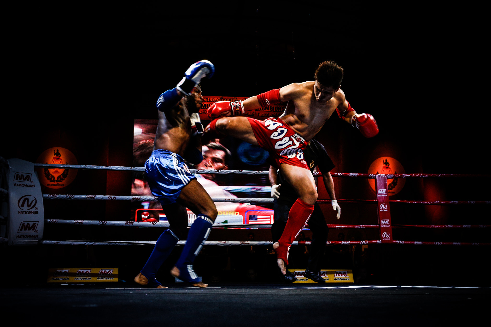
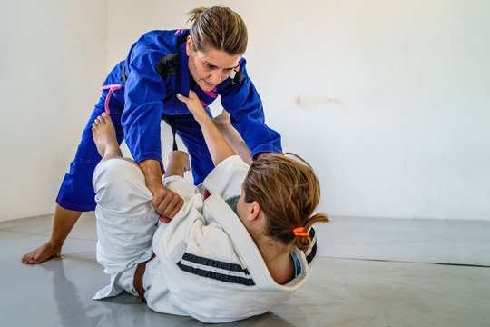
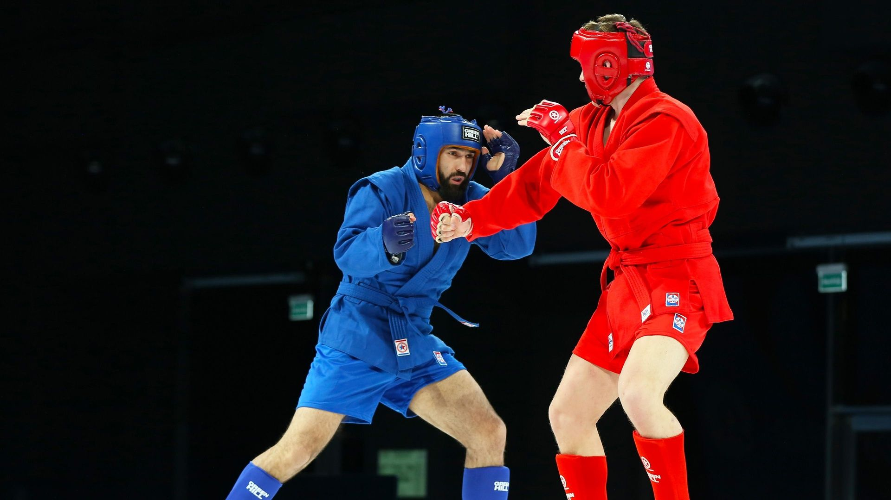
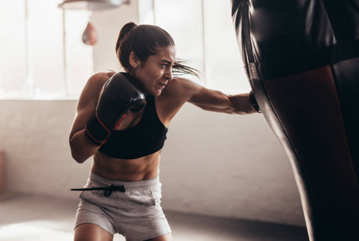

Kol
6 hareket- Arm Push Curl
- Arm Push Hammer Curl
- Arm Push Reverse Curl
- Arm Push High Curl
- Push Upright Curl
- Palms Up Curl
Muay Thai, boks, judo, BJJ, sambo ve MMA. Birebir ve grup dersleri, çocuklar ve kadınlar için özel gruplar, kurumlar için motivasyon eğitimleri.
Dövüş sanatlarının her biri kendi disiplinini ister. Bir branşa tıklayarak detaylarına ulaşabilir, hedefinize uygun dalı birlikte seçebiliriz.
Tayland'da ortaya çıkan, yumruk, diz, dirsek ve tekme ile clinch tekniklerini kullanan sert bir dövüş sanatı.
Detay → 02Cuba, Rus, İngiliz ve ABD okullarının teknikleriyle, güç, dayanıklılık ve cesaret geliştiren bir spor dalı.
Detay → 03Japon kökenli, olimpik bir dövüş sanatı. Atma ve kırış teknikleriyle denge, kontrol ve disiplin kazandırır.
Detay → 04Ayakta ve yerde güreş, boğuş ve kaldıraç tekniklerini içeren bir savaş sanatı ve dövüş sporu sistemi.
Detay → 05Rus kökenli, "silahsız savunma" anlamına gelen, karma dövüş tekniklerini içeren bir dövüş sanatı ve olimpik spor dalı.
Detay → 06Birden fazla dövüş sanatının bir arada yapıldığı karma dövüş. Ayakta, yerde ve mesafe dışı becerileri birleştirir.
Detay → 07Yumruk, tekme, diz ve sınırlı clinch uygulamalarının bir araya getirilmesiyle oluşan eklektik bir dövüş sporu. Egzersiz olarak da, tam temaslı bir mücadele sporu olarak da uygulanır.
Detay →Kuvvet, dayanıklılık, özgüven ve disiplin. Çocuğunuzun sağlıklı gelişimini destekleyen özel grup.
Detay → KadınlarKendini koruma, özgüven ve kadın dayanışması. Gündelik hayatta güvende hissetmek için özel grup.
Detay →Kurum ve kuruluşlarda çalışanlar için motivasyon odaklı eğitimler. Dövüş sporlarının prensipleriyle kurgulanmış, ekibinizin enerjisini yükselten bir program.

Tayland'da ortaya çıkan ve özgün adı Muay Thai olan dövüş sporudur. Tayland Boksu da denilmektedir. Yumruk, diz, dirsek, tekmelerin ve clinch kullanıldığı oldukça sert bir dövüş sanatıdır.
1932'den bu yana dünya çapında takdir edilen ve Thai Boxing ya da Muay Thai olarak bilinen bir dövüş sporuna dönüşen antik dövüş sanatıdır. Vücudun kafa, yumruklar, kollar, dirsekler, dizler ve ayaklar gibi bölümlerini, ilave silahlarla ya da silahsız kullanan pratik bir dövüş becerisidir.
Muay Thai'nin silah temelli disiplinidir. Ana silahlar eğri kılıç (krabi) ve sopa (krabong)'dır. Bununla birlikte dirsek, diz, yumruk, güreş ve tekmeler de kullanılır. Yetenekli olabilmek için yıllarca çalışmak gerekir.

İki rakip arasında düzenlenen, yumrukla saldırı ve savunmaya dayanan, amatör ya da profesyonel olarak katı kurallar çerçevesinde yapılan bir spor dalıdır.
Cuba, Rus, İngiliz ve ABD boks okullarının teknikleriyle çalışılır. Boks, güç, dayanıklılık ve ciddi cesaret isteyen bir spor türüdür.

İnsan vücudunu ve zihinsel yapısını eğiten ve geliştiren Japon kökenli bir dövüş sanatı ve olimpik bir spor dalıdır.
Ayakta ve yerde güreş, boğuş, atma ve kırış tekniklerini içerir. Denge, kontrol ve disiplin kazandırır.

Brazilian Jiu-Jitsu, bir savaş sanatı ve dövüş sporu sistemidir. Ayakta ve yerde güreş, boğuş, atma ve kırış tekniklerini içerir.

Rus kökenli, silahsız savunma anlamına gelen, karma dövüş sanatları içeren bir dövüş sanatı ve olimpik bir spor dalıdır.

Mixed Martial Arts: birden fazla dövüş sanatının bir arada yapılmasıdır. Her türlü dövüş sporundan faydalanır ve karma teknikleri içerir.
Düzenli fiziksel aktivite ile çocuğun kuvvet ve dayanıklılığı artar, kemik gelişimi olumlu yönde etkilenir ve kilo kontrolü sağlanır. Spor ile hareketsizlik ve aşırı kilo sonucunda erişkin dönemde gelişebilecek kalp damar hastalıkları, şeker hastalığı ve diğer sağlık sorunları önlenebilir.

Kadınlara özel kickboxing ve judo grubumuz, gündelik hayatta kendini savunabilmenin yanında özgüven ve disiplin de kazandırmak için kurgulandı.

Kick boks, yumruk, tekme, diz ve sınırlı clinch uygulamalarının bir araya getirilmesiyle oluşturulmuş eklektik bir dövüş sporudur.
Egzersiz sistemi olarak uygulanabildiği gibi tam temaslı bir mücadele sporu olarak da uygulanabilmektedir.
Her bölgenin egzersiz listesi aşağıda. Dövüş sporlarında kuvvet, dayanıklılık ve dengenin birlikte geliştiğini unutmadan, her çalışmayı süper set olarak yapın.
Birebir, özel grup ya da grup dersleri için bize ulaşın. İlk görüşmede hedeflerinizi dinleyip size uygun programı birlikte belirleriz.
Randevu almak için WhatsApp'tan yazabilir, telefonla arayabilir ya da e-posta gönderebilirsiniz. Mesajınızda hangi dalla ilgilendiğinizi yazmanız yeterli.